字體審查 B 批：先看效果
2026-09-23 已定案並套用到 web/：四項都做。B-2 校名改為直接共用首頁分校資訊的尺寸（63.36／54／50px），B-3 採「輕收」並加上分校頁詞組斷行，B-4 保留校名、日期、頁首等例外。細節見 DESIGN.md「字體審查 B 批」。
2026-09-23 · 在執行中的 Nuxt 前台注入改後樣式截圖，web/ 原始碼沒有改。macOS Chrome 153，桌機 1440、手機 390（2x）。拍立得用的是減少動態模式的 DOM 版。
B-1預約頁大標改用自託管思源宋體
現況字型順序是 Songti TC → Noto Serif TC → PMingLiU。Mac 有 Songti TC，所以看起來跟改後幾乎一樣。差別在 Windows：Windows 預設沒有前兩個字型，會落到新細明體（PMingLiU），筆畫細、字形比較舊。改後三個平台都用同一份字檔。
現況（Mac：Songti TC；Windows 會是新細明體，未實機驗證）
改後：思源宋體 500，跟首頁「分校資訊」同一套
- 要多一個 3.9 KB 的字檔
noto-serif-tc-500-visit.woff，含 9 個字（帶著好奇來園走，。）。「校」已經在分校明體子集裡。
- 跟分校明體共用
Ivy Campus Serif 字型名稱，用 unicode-range 分流，不動既有子集檔。
- 這句寫死在
VisitForm.vue:276，不經過 CMS，所以子集不會缺字。
B-2分校頁校名改用明體，跟首頁一致
同一個「義華校」，首頁分校資訊是明體 500，進到分校頁卻變成 LINE Seed 800。明體子集已經有五個校名，改了不用新增字檔。
桌機 1440
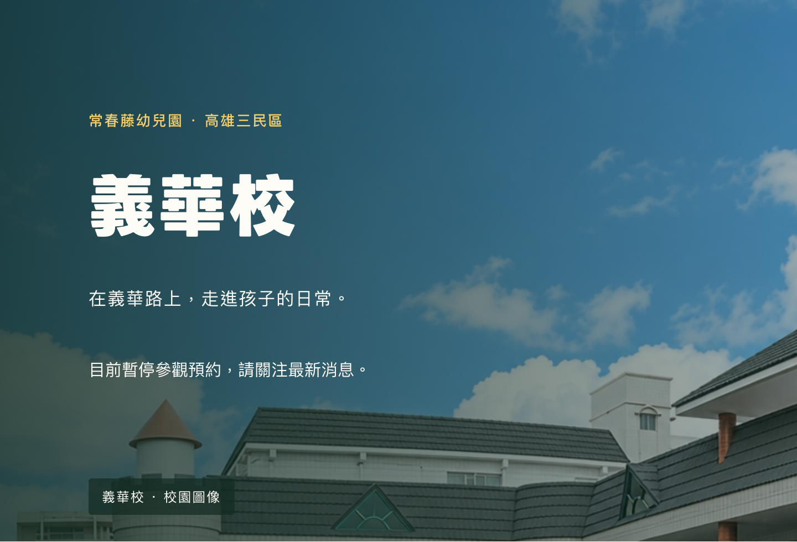
現況：LINE Seed TW 800
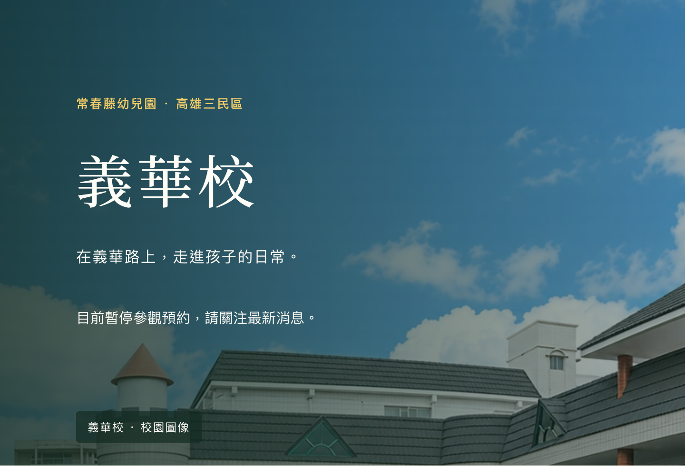
改後：思源宋體 500，字距 .065em（同首頁）
手機 390
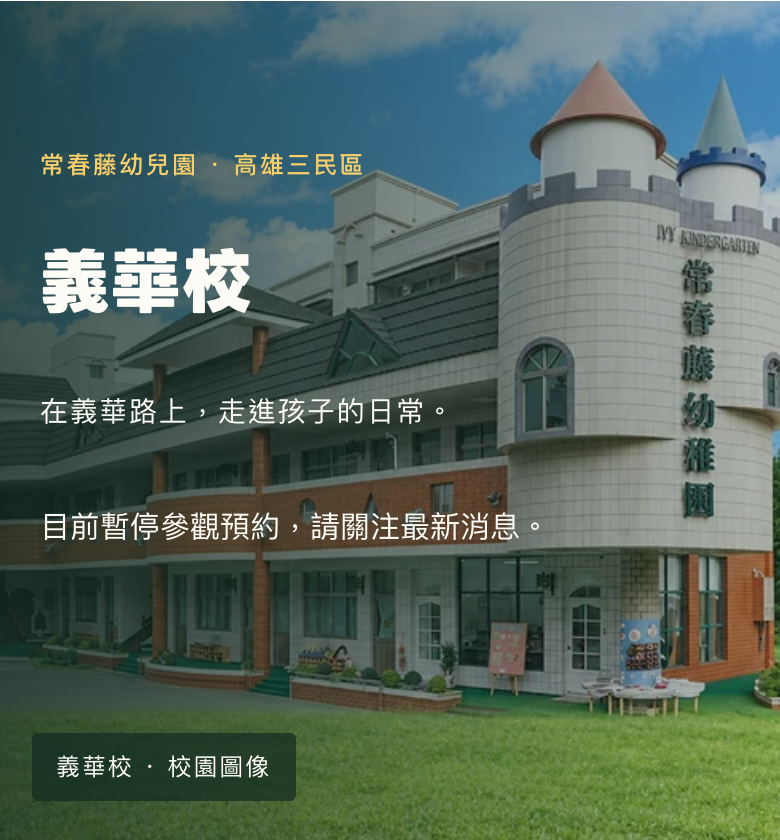
現況
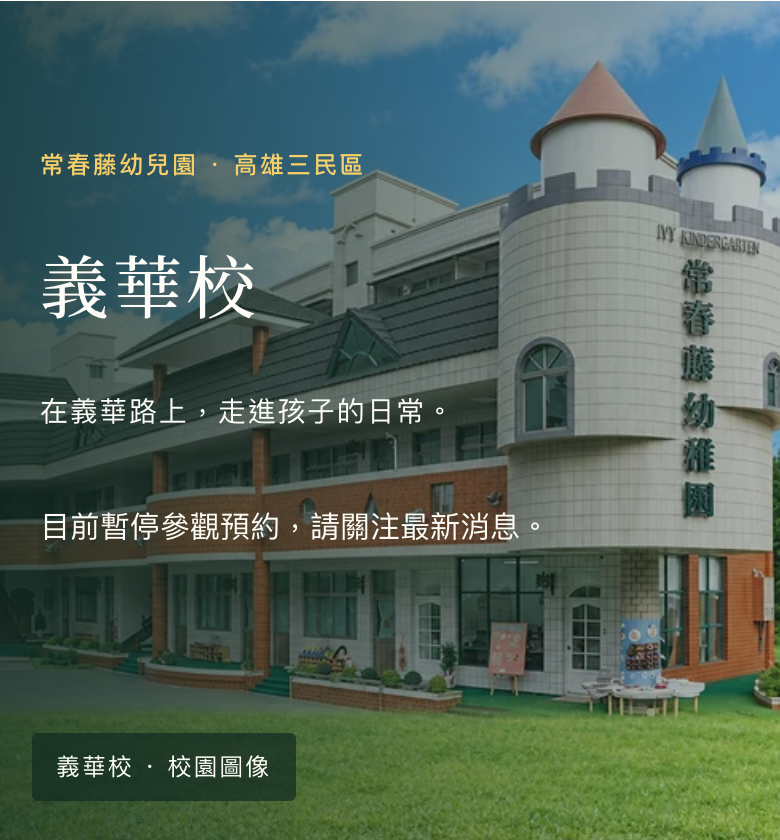
改後
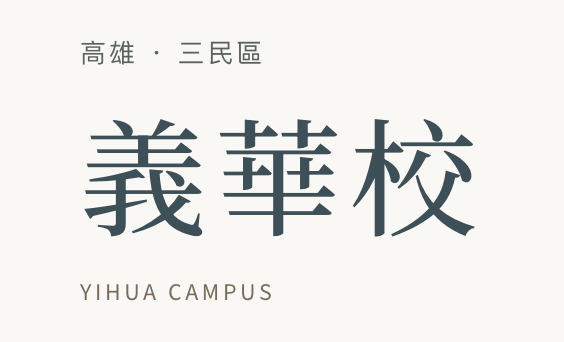
對照：首頁分校資訊的校名
- 字級維持原樣（桌機 60px、手機 34.4px），只換字體。明體比較細，看起來會小一號；若要跟首頁一樣有份量，可以放大到 64px。
- 白字壓在照片上，明體的細筆畫比粗黑體更依賴遮罩。這版照片左側有深色遮罩，目視可讀；上線前要照 DESIGN.md 的規矩對實際照片量對比。
- 拿掉 800 後，分校頁不再需要 LINE Seed ExtraBold（
lineseed-eb）這份字檔，只是要先確認其他頁有沒有用到它。
B-3標題標點收緊
先更正審查時的說法：我下載了 LINE Seed TW 原始檔，發現它的 halt 本來就只收括號「」『』（），「，」「。」是置中字形（墨色只佔 0.40–0.59em）。所以不管換不換原始檔，逗號、句號都沒辦法靠字型自動收，只能手動加負邊距。
拍立得標題（開括號在行首）
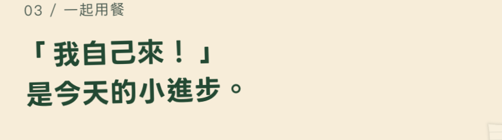
現況
輕收：行首「收半格，跟下一行對齊
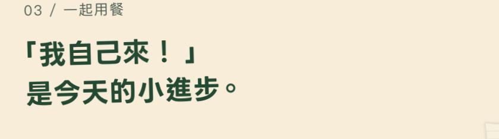
全收：＋句號收窄
拍立得標題（」，相鄰）
現況：Chrome 預設已收相鄰標點
 輕收：這句沒有差別
輕收：這句沒有差別
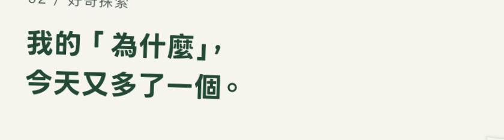
全收
理念大標
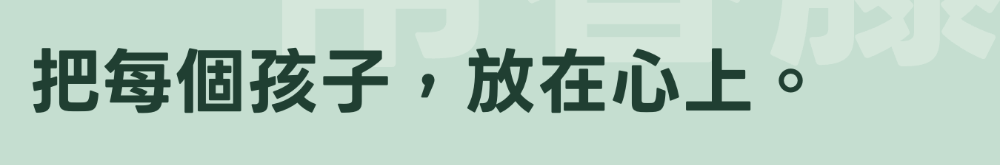
現況
 輕收：沒有括號，不變
輕收：沒有括號，不變
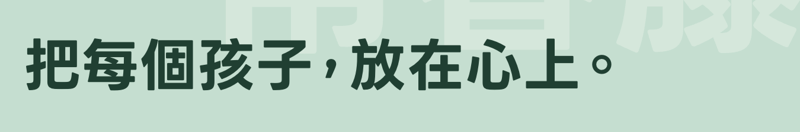
全收：「孩子，放在」變緊
分校頁區塊標題（手機）
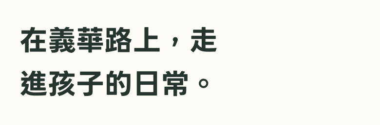
現況
 輕收
輕收
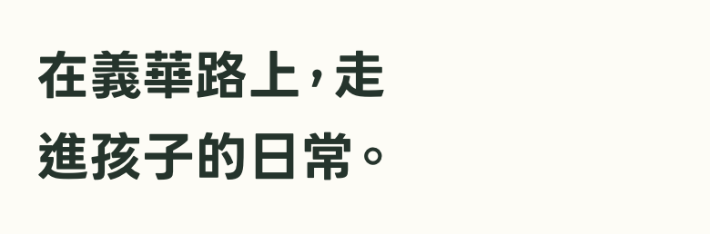
全收
消息卡標題
現況
 輕收
輕收
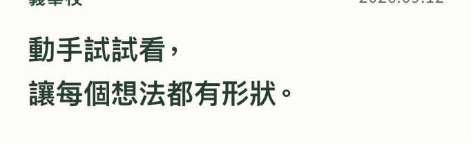
全收
- 輕收：標題加一行
text-spacing-trim:trim-start，靠字型內建的 halt。只影響行首的開括號，其他字完全不動。Chrome、Safari 支援，Firefox 照舊顯示。
- 全收：輕收，再把每個「，、。」包成 span 加負邊距。標題來自 CMS，所以要做成元件自動處理。效果比較接近日文排法，台灣的全形逗號習慣上是置中佔滿一格。
- 一般使用者看到的拍立得是 WebGL 紙面，文字由 canvas 逐行繪製。不管選輕收還是全收，都要另外改
paperPrints.ts 的繪製，不然 WebGL 版和這裡的 DOM 版會不一樣。
順帶：分校頁標題只在標點後換行
A 批只處理了消息卡。分校頁手機版的區塊標題還是會把「走進」拆開，套用同樣做法（keep-all＋balance）之後：
現況：「走／進」被拆開
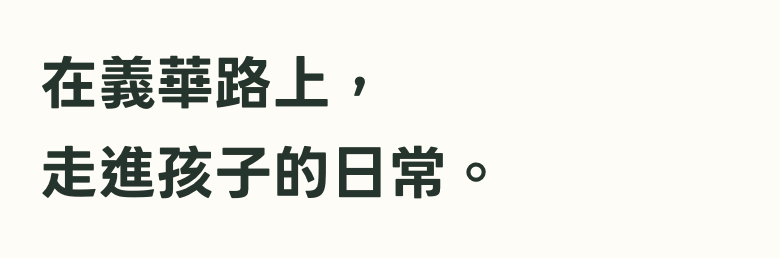
改後（手機）
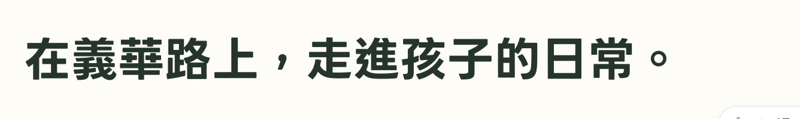
改後（桌機）：一行放得下，不變
B-4字級收斂成 token
目前首頁桌機一頁用了 23 種字級（分校頁 14、預約頁 12），CSS 裡共 261 處 font-size，還有三層檔案互相覆蓋。建議收成 12 階：
12說明14次要16內文18導言20卡片標題24小標283240486064
例外照舊：頁首品牌字（園方規格 30／18）、導覽中文 15px（園方規格）、大字接縫（vw）、英文裝飾小字。
| 頁面 | 現在字級數 | 收斂後變動 ≥2px 的元素 |
|---|
| 首頁桌機 | 23 | 拍立得時間戳 22→24、活動日期 36→40、頁尾校名 22→24 |
| 首頁手機 | 18 | 首屏主標 34→32、「關於／的一天」接縫字 56→60、分校明體校名 50→48、活動日期 36→40 |
| 分校頁桌機／手機 | 14／14 | 桌機：頁尾校名 22→24；手機：校名 34.4→32、景點標題 22→24 |
| 預約頁桌機／手機 | 12／10 | 頁尾校名 22→24；手機沒有 |
- 畫面上幾乎看不出來：大部分只差 1px 左右（例如 13→14、15→16、23→24、38.9→40）。上表是會明顯變動的全部元素，其中首屏主標 34px、活動日期 36px 是已定案的規格，可以列為例外保留。
- 真正的好處在後面：CMS 開放編輯、之後改版時只調 token，不必在三個 CSS 檔裡找數字。
- B-4 會動到全站所有 CSS 檔。另一個 session 還在改開場動畫，建議等那邊收尾後再做，比較不會互相覆蓋。
要你決定的
- B-1 預約頁明體：換成自託管思源宋體？（建議做：Mac 上看不出差別，但能避免 Windows 顯示新細明體）
- B-2 分校頁校名：改成明體 500？要維持 60px，還是放大到 64px 跟首頁一樣？
- B-3 標點：現況／輕收／全收選一個。選輕收或全收都要連 WebGL 拍立得一起改。另外，分校頁標題的詞組斷行要不要一起做？
- B-4 字級 token：現在做，還是等開場動畫那邊收尾？首屏主標 34px、活動日期 36px 是否列為例外？